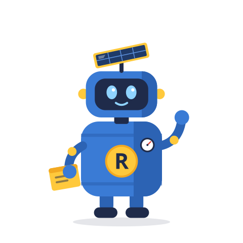

Taller de saneamiento · Lección 3
Eki baja la bajante
Puntos0
Vidas3 / 3
Racha0
Quedan105 s
Récord 0
Prepara el taller.
Flechas o A/D: moverse. Espacio o E: actuar. Dedo: carriles y botón Actuar; también puedes tocar una pieza dentro de la franja. Esc: pausa. Se pausa al cambiar de ventana.